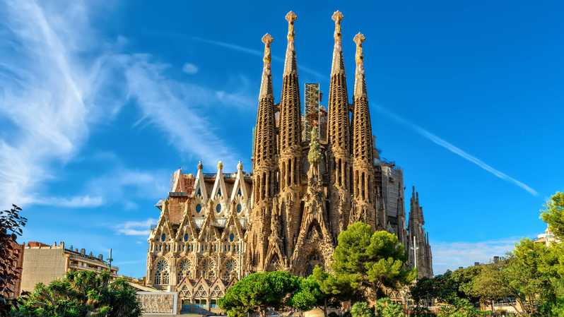
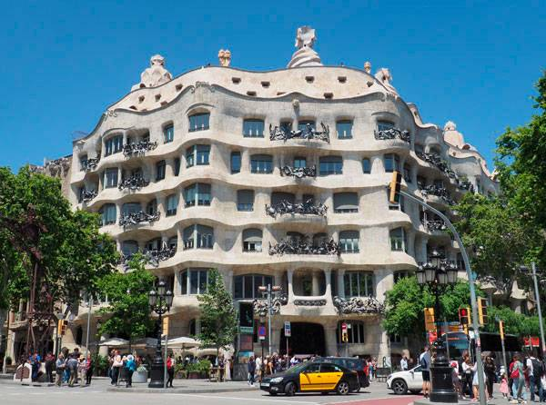
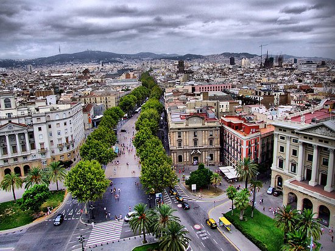

BARCELONA
Barcelona, la capital cosmopolita de la región de Cataluña en España, es conocida por su arte y arquitectura. La fantástica iglesia de la Sagrada Familia y otros hitos modernistas diseñados por Antoni Gaudí adornan la ciudad. El Museo Picasso y la Fundación Joan Miró muestran el arte moderno de los artistas que dan origen a sus nombres. El Museo de Historia de Barcelona (MUHBA) incluye varios sitios arqueológicos romanos. Las raíces medievales de Barcelona se aprecian en el laberíntico Barrio Gótico. El desbordante paseo costero central, La Rambla, está bordeado de cafés. Al norte de La Barceloneta, un barrio con una playa amplia y restaurantes de mariscos, el Parque de la Ciudadela alberga el Zoológico de Barcelona. El parque Güell es un jardín en una cima con coloridos mosaicos de Gaudí y vistas panorámicas. Un funicular se traslada hasta la cima del Montjuïc, donde la Fuente Mágica presenta espectáculos de luces y música, y el Palacio Nacional muestra arte catalán. El escenario culinario, centrado en el mercado de La Boquería, varía desde finas preparaciones hasta los bares de tapas. Se puede encontrar una animada vida nocturna en El Born y el distrito Eixample.

Andrea: Barcelona posee una impresionante oferta cultural, contando con algunos interesantes museos como la Fundación Joan Miró o el Museo Picasso, aunque donde se aprecia realmente el arte que envuelve la ciudad es paseando por sus calles cargadas de encanto.
El Templo Expiatorio de la Sagrada Familia (en catalán, Temple Expiatori de la Sagrada Família), conocido simplemente como la Sagrada Familia, es una basílica católica de Barcelona (España), diseñada por el arquitecto Antoni Gaudí. Iniciada en 1882, todavía está en construcción.
El parque Güell es un parque público con jardines y elementos arquitectónicos situado en la parte superior de la ciudad de Barcelona. Se halla en la vertiente meridional del monte Carmelo, que pertenece a las estribaciones de la sierra de Collserola; en la cara septentrional se halla el parque del Carmelo.
La Casa Milà, llamada popularmente «La Pedrera», es un edificio modernista obra del arquitecto Antoni Gaudí, construido entre los años 1906 y 1910 en el distrito del Ensanche de Barcelona, en el número 92 del paseo de Gracia.
La Casa Batlló es un edificio obra del arquitecto Antoni Gaudí, máximo representante del modernismo catalán. Se trata de una remodelación integral de un edificio previamente existente en el solar, obra de Emilio Sala Cortés.
La Rambla, también llamada Las Ramblas, es un emblemático paseo de la ciudad de Barcelona que discurre entre la plaza de Cataluña, centro neurálgico de la ciudad, y el puerto antiguo. El paseo está lleno de gente de día y hasta altas horas de la noche.
